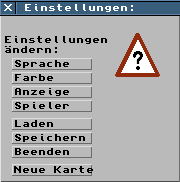
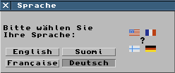
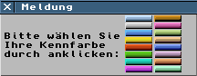
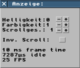
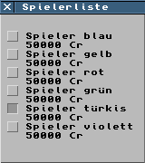
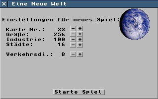

Im Einstellungsfenster können die Einstellungen zur Sprache (deutsch, englisch, französisch, finnisch), die Einstellung der Spielerfarbe (16 Farbsets), die Einstellungen zur Anzeige (Helligkeit, Farbkontrast und Scrolling) sowie die Anzahl der Spieler eingestellt werden.

Ausser den oben genannten Einstellungsmöglichkeiten können hier auch Spielstände geladen und gespeichert, das Spiel beendet sowie eine neue Karte erschaffen werden.
Zur Zeit kann die Sprache zwischen Englisch, Französisch, Finnisch und Deutsch umgeschaltet werden. Die Umschaltung kann zu jeder Zeit, auch mitten im Spiel, vorgenommen werden.

Es stehen 16 Farbsets zur Auswahl. Einige davon werden möglicherweise bereits von Computerspielern benutzt. Dann sollte man ein noch nicht verwendetes Farbset auswählen.

Helligkeit und Farbkontrast der Anzeige können hier eingestellt werden. Darunter kann die Scrollgeschwindigkeit sowie die Richtung des Scrollens verändert werden. Ganz unten sind ein paar Angaben zur Geschwindigkeit des Spieles (z.B. FPS Frames-Per-Second: Bilder pro Sekunde).

Bis zu 6 computerisierte Mitspieler können aktiviert werden. Falls sie zu aufdringlich werden, kann man sie auch jederzeit wieder abschalten.

Ein Klick auf diese Schaltfläche lädt einen Spielstand. Ein Nachrichtenfenster gibt eine Rückmeldung, ob der Spielstand erfolgreich gespeichert werden konnte.
Ein Klick auf diese Schaltfläche lädt einen Spielstand.
Ein Klick auf diese Schaltfläche beendet das laufende Spiel ohne Nachfrage. Der aktuelle Speilstand ist verloren, wenn er nicht zuvor gespeichert wurde.
Neue Karte
Hier können neue Karten erstellt werden, und zwar folgendermaßen: Durch Änderung des Wertes "Karte Nr." wird die neue Karte anders aufgebaut. Die "Größe" bezieht sich auf die Anzahl der Felder der Karte: 256 bedeutet 256 * 256 Felder insgesamt. Die Karte ist immer quadratisch. "Industrie" gibt die Gesamtzahl aller Fabriken und Rohstoffliferanten an. Parallel dazu gibt "Städte" die Anzahl der Städte auf der Karte an. "Verkehrsdi." beschreibt die Verkehrsdichte im Spiel. Nach einem Klick auf "Starte Spiel" fängt der Computer sofort mit der Berechnung der neuen Karte an. Bitte haben Sie etwas Geduld, auch auf schnellen Computern kann dieser Prozess länger dauern (besonders bei großen Karten!).
